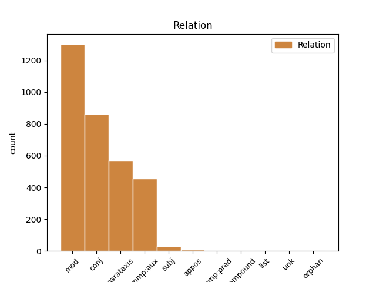
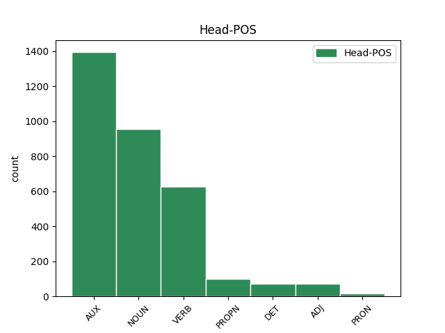
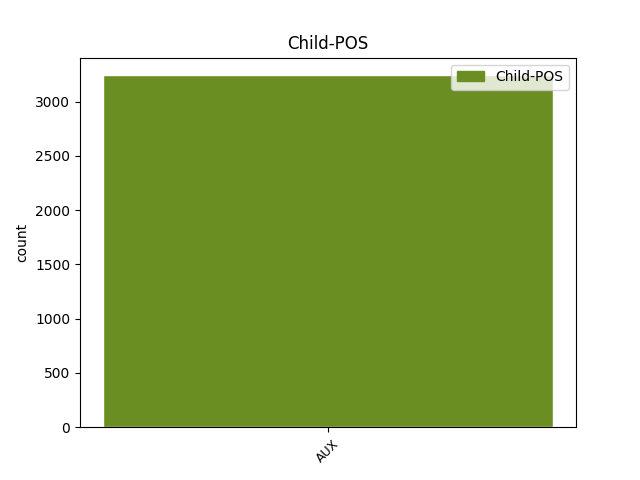

Distribution of features within this leaf



Agreement Rules sorted by frequency.
- When the dependent token is the modifer(mod) of the head token, and the dependent token is AUX.
1 Slikovito _ _ _ _ 0 _ _ _
2 rečeno _ _ _ _ 0 _ _ _
3 , _ _ _ _ 0 _ _ _
4 uobičajen _ _ _ _ 0 _ _ _
5 , _ _ _ _ 0 _ _ _
6 i _ _ _ _ 0 _ _ _
7 modno _ _ _ _ 0 _ _ _
8 nametnut _ _ _ _ 0 _ _ _
9 način _ _ _ _ 0 _ _ _
10 odijevanja _ _ _ _ 0 _ _ _
11 suvremene _ _ _ _ 0 _ _ _
12 žene _ _ _ _ 0 _ _ _
13 karakteriziraju _ _ _ _ 0 _ _ _
14 duboki _ _ _ _ 0 _ _ _
15 izrazi _ _ _ _ 0 _ _ _
16 gdje _ _ _ _ 0 _ _ _
17 god _ _ _ _ 0 _ _ _
18 je biti AUX Var3s Mood=Ind|Number=Sing|Person=3|Tense=Pres|VerbForm=Fin 23 mod _ orig_deprel=cop
19 i _ _ _ _ 0 _ _ _
20 koliko _ _ _ _ 0 _ _ _
21 god _ _ _ _ 0 _ _ _
22 je _ _ _ _ 0 _ _ _
23 moguće moguć ADJ Agpnsny Case=Nom|Definite=Def|Degree=Pos|Gender=Neut|Number=Sing 0 _ _ _
24 . _ _ _ _ 0 _ _ _
1 Samsonova _ _ _ _ 0 _ _ _
2 majka _ _ _ _ 0 _ _ _
3 Mara _ _ _ _ 0 _ _ _
4 je biti AUX Var3s Mood=Ind|Number=Sing|Person=3|Tense=Pres|VerbForm=Fin 0 _ _ _
5 neplodna _ _ _ _ 0 _ _ _
6 i _ _ _ _ 0 _ _ _
7 već _ _ _ _ 0 _ _ _
8 je biti AUX Var3s Mood=Ind|Number=Sing|Person=3|Tense=Pres|VerbForm=Fin 4 conj _ _
9 izgubila _ _ _ _ 0 _ _ _
10 nadu _ _ _ _ 0 _ _ _
11 da _ _ _ _ 0 _ _ _
12 će _ _ _ _ 0 _ _ _
13 ikada _ _ _ _ 0 _ _ _
14 imati _ _ _ _ 0 _ _ _
15 djece _ _ _ _ 0 _ _ _
16 kada _ _ _ _ 0 _ _ _
17 joj _ _ _ _ 0 _ _ _
18 se _ _ _ _ 0 _ _ _
19 ukaže _ _ _ _ 0 _ _ _
20 tajanstveni _ _ _ _ 0 _ _ _
21 stranac _ _ _ _ 0 _ _ _
22 i _ _ _ _ 0 _ _ _
23 prorekne _ _ _ _ 0 _ _ _
24 da _ _ _ _ 0 _ _ _
25 će _ _ _ _ 0 _ _ _
26 roditi _ _ _ _ 0 _ _ _
27 sina _ _ _ _ 0 _ _ _
28 koji _ _ _ _ 0 _ _ _
29 će _ _ _ _ 0 _ _ _
30 spasiti _ _ _ _ 0 _ _ _
31 svoj _ _ _ _ 0 _ _ _
32 narod _ _ _ _ 0 _ _ _
33 iz _ _ _ _ 0 _ _ _
34 filistejskog _ _ _ _ 0 _ _ _
35 ropstva _ _ _ _ 0 _ _ _
36 . _ _ _ _ 0 _ _ _
1 Jedino _ _ _ _ 0 _ _ _
2 mi _ _ _ _ 0 _ _ _
3 se _ _ _ _ 0 _ _ _
4 činilo _ _ _ _ 0 _ _ _
5 da _ _ _ _ 0 _ _ _
6 je _ _ _ _ 0 _ _ _
7 u _ _ _ _ 0 _ _ _
8 njima _ _ _ _ 0 _ _ _
9 puno _ _ _ _ 0 _ _ _
10 više _ _ _ _ 0 _ _ _
11 tuge _ _ _ _ 0 _ _ _
12 nego _ _ _ _ 0 _ _ _
13 kada _ _ _ _ 0 _ _ _
14 je biti AUX Var3s Mood=Ind|Number=Sing|Person=3|Tense=Pres|VerbForm=Fin 0 _ _ _
15 bila biti AUX Vap-sf Gender=Fem|Number=Sing|Tense=Past|VerbForm=Part|Voice=Act 14 comp:aux _ _
16 djevojčica _ _ _ _ 0 _ _ _
17 . _ _ _ _ 0 _ _ _
1 Biljno _ _ _ _ 0 _ _ _
2 ulje _ _ _ _ 0 _ _ _
3 ... _ _ _ _ 0 _ _ _
4 ono _ _ _ _ 0 _ _ _
5 koje _ _ _ _ 0 _ _ _
6 možeš _ _ _ _ 0 _ _ _
7 kupiti _ _ _ _ 0 _ _ _
8 u _ _ _ _ 0 _ _ _
9 svakom _ _ _ _ 0 _ _ _
10 dućanu _ _ _ _ 0 _ _ _
11 i _ _ _ _ 0 _ _ _
12 na _ _ _ _ 0 _ _ _
13 kojem _ _ _ _ 0 _ _ _
14 piše pisati VERB Vmr3s Mood=Ind|Number=Sing|Person=3|Tense=Pres|VerbForm=Fin 0 _ _ _
15 ( _ _ _ _ 0 _ _ _
16 nećeš htjeti AUX Var2s Mood=Ind|Number=Sing|Person=2|Polarity=Neg|Tense=Pres|VerbForm=Fin 14 parataxis _ _
17 vjerovati _ _ _ _ 0 _ _ _
18 ) _ _ _ _ 0 _ _ _
19 biljno _ _ _ _ 0 _ _ _
20 ulje _ _ _ _ 0 _ _ _
21 . _ _ _ _ 0 _ _ _
1 Vlada _ _ _ _ 0 _ _ _
2 kupuje _ _ _ _ 0 _ _ _
3 vrijeme _ _ _ _ 0 _ _ _
4 i _ _ _ _ 0 _ _ _
5 pitanje _ _ _ _ 0 _ _ _
6 je biti AUX Var3s Mood=Ind|Number=Sing|Person=3|Tense=Pres|VerbForm=Fin 0 _ _ _
7 kada _ _ _ _ 0 _ _ _
8 će htjeti AUX Var3s Mood=Ind|Number=Sing|Person=3|Tense=Pres|VerbForm=Fin 6 subj _ _
9 platiti _ _ _ _ 0 _ _ _
10 dugove _ _ _ _ 0 _ _ _
11 . _ _ _ _ 0 _ _ _
1 Iako _ _ _ _ 0 _ _ _
2 je _ _ _ _ 0 _ _ _
3 Dalmatinca _ _ _ _ 0 _ _ _
4 nadasve _ _ _ _ 0 _ _ _
5 teško _ _ _ _ 0 _ _ _
6 pobijediti _ _ _ _ 0 _ _ _
7 u _ _ _ _ 0 _ _ _
8 briškuli _ _ _ _ 0 _ _ _
9 , _ _ _ _ 0 _ _ _
10 Zagorca _ _ _ _ 0 _ _ _
11 u _ _ _ _ 0 _ _ _
12 beli _ _ _ _ 0 _ _ _
13 , _ _ _ _ 0 _ _ _
14 a _ _ _ _ 0 _ _ _
15 Baranjca _ _ _ _ 0 _ _ _
16 i _ _ _ _ 0 _ _ _
17 Slavonca _ _ _ _ 0 _ _ _
18 u _ _ _ _ 0 _ _ _
19 spremanju _ _ _ _ 0 _ _ _
20 fišpaprikaša _ _ _ _ 0 _ _ _
21 , _ _ _ _ 0 _ _ _
22 treće _ _ _ _ 0 _ _ _
23 mjesto _ _ _ _ 0 _ _ _
24 ipak _ _ _ _ 0 _ _ _
25 je _ _ _ _ 0 _ _ _
26 osvojila _ _ _ _ 0 _ _ _
27 domaća _ _ _ _ 0 _ _ _
28 ekipa _ _ _ _ 0 _ _ _
29 znakovita _ _ _ _ 0 _ _ _
30 imena ime NOUN Ncnsg Case=Gen|Gender=Neut|Number=Sing 0 _ _ _
31 " _ _ _ _ 0 _ _ _
32 Bilo _ _ _ _ 0 _ _ _
33 mi _ _ _ _ 0 _ _ _
34 je biti AUX Var3s Mood=Ind|Number=Sing|Person=3|Tense=Pres|VerbForm=Fin 30 appos _ _
35 vrime _ _ _ _ 0 _ _ _
36 " _ _ _ _ 0 _ _ _
37 za _ _ _ _ 0 _ _ _
38 koju _ _ _ _ 0 _ _ _
39 su _ _ _ _ 0 _ _ _
40 kuhali _ _ _ _ 0 _ _ _
41 Stipe _ _ _ _ 0 _ _ _
42 Jerković _ _ _ _ 0 _ _ _
43 i _ _ _ _ 0 _ _ _
44 Mate _ _ _ _ 0 _ _ _
45 Katuša _ _ _ _ 0 _ _ _
1 Preko _ _ _ _ 0 _ _ _
2 pedera _ _ _ _ 0 _ _ _
3 i _ _ _ _ 0 _ _ _
4 lezbi _ _ _ _ 0 _ _ _
5 se _ _ _ _ 0 _ _ _
6 testira _ _ _ _ 0 _ _ _
7 otpornost _ _ _ _ 0 _ _ _
8 naroda _ _ _ _ 0 _ _ _
9 na _ _ _ _ 0 _ _ _
10 provokaciju _ _ _ _ 0 _ _ _
11 , _ _ _ _ 0 _ _ _
12 da _ _ _ _ 0 _ _ _
13 se _ _ _ _ 0 _ _ _
14 vidi _ _ _ _ 0 _ _ _
15 koliki _ _ _ _ 0 _ _ _
16 im _ _ _ _ 0 _ _ _
17 je biti AUX Var3s Mood=Ind|Number=Sing|Person=3|Tense=Pres|VerbForm=Fin 23 comp:pred _ _
18 prag _ _ _ _ 0 _ _ _
19 tolerancije _ _ _ _ 0 _ _ _
20 , _ _ _ _ 0 _ _ _
21 dokle _ _ _ _ 0 _ _ _
22 se _ _ _ _ 0 _ _ _
23 smije smjeti VERB Vmr3s Mood=Ind|Number=Sing|Person=3|Tense=Pres|VerbForm=Fin 0 _ _ _
24 ići _ _ _ _ 0 _ _ _
25 . _ _ _ _ 0 _ _ _
1 U _ _ _ _ 0 _ _ _
2 susjedstvu _ _ _ _ 0 _ _ _
3 se _ _ _ _ 0 _ _ _
4 priča _ _ _ _ 0 _ _ _
5 da _ _ _ _ 0 _ _ _
6 je biti AUX Var3s Mood=Ind|Number=Sing|Person=3|Tense=Pres|VerbForm=Fin 10 compound _ _
7 kuća _ _ _ _ 0 _ _ _
8 prošle _ _ _ _ 0 _ _ _
9 godine _ _ _ _ 0 _ _ _
10 prodana prodati ADJ Appfsny Case=Nom|Definite=Def|Degree=Pos|Gender=Fem|Number=Sing|VerbForm=Part|Voice=Pass 0 _ _ _
11 nekom _ _ _ _ 0 _ _ _
12 imućnom _ _ _ _ 0 _ _ _
13 paru _ _ _ _ 0 _ _ _
14 iz _ _ _ _ 0 _ _ _
15 Zagreba _ _ _ _ 0 _ _ _
16 . _ _ _ _ 0 _ _ _
1 Očito _ _ _ _ 0 _ _ _
2 u _ _ _ _ 0 _ _ _
3 Italiji _ _ _ _ 0 _ _ _
4 nema _ _ _ _ 0 _ _ _
5 onoga _ _ _ _ 0 _ _ _
6 bio _ _ _ _ 0 _ _ _
7 je _ _ _ _ 0 _ _ _
8 bolji dobar ADJ Agcmsny Case=Nom|Definite=Def|Degree=Cmp|Gender=Masc|Number=Sing 0 _ _ _
9 , _ _ _ _ 0 _ _ _
10 mi _ _ _ _ 0 _ _ _
11 smo _ _ _ _ 0 _ _ _
12 pogriješili _ _ _ _ 0 _ _ _
13 , _ _ _ _ 0 _ _ _
14 čestitamo _ _ _ _ 0 _ _ _
15 , _ _ _ _ 0 _ _ _
16 bit _ _ _ _ 0 _ _ _
17 će htjeti AUX Var3s Mood=Ind|Number=Sing|Person=3|Tense=Pres|VerbForm=Fin 8 list _ _
18 bolje _ _ _ _ 0 _ _ _
19 drugi _ _ _ _ 0 _ _ _
20 put _ _ _ _ 0 _ _ _
21 . _ _ _ _ 0 _ _ _
1 Nije _ _ _ _ 0 _ _ _
2 prošlo _ _ _ _ 0 _ _ _
3 ni _ _ _ _ 0 _ _ _
4 godinu _ _ _ _ 0 _ _ _
5 dana _ _ _ _ 0 _ _ _
6 , _ _ _ _ 0 _ _ _
7 izgubio _ _ _ _ 0 _ _ _
8 je _ _ _ _ 0 _ _ _
9 licencu _ _ _ _ 0 _ _ _
10 od _ _ _ _ 0 _ _ _
11 BMW-a _ _ _ _ 0 _ _ _
12 , _ _ _ _ 0 _ _ _
13 izgubio _ _ _ _ 0 _ _ _
14 posao _ _ _ _ 0 _ _ _
15 , _ _ _ _ 0 _ _ _
16 ja _ _ _ _ 0 _ _ _
17 svoj _ _ _ _ 0 _ _ _
18 novac _ _ _ _ 0 _ _ _
19 nisam _ _ _ _ 0 _ _ _
20 dobio _ _ _ _ 0 _ _ _
21 , _ _ _ _ 0 _ _ _
22 ali _ _ _ _ 0 _ _ _
23 zadovoljštinu zadovoljština NOUN Ncfsa Case=Acc|Gender=Fem|Number=Sing 0 _ _ _
24 ipak _ _ _ _ 0 _ _ _
25 jesam biti AUX Var1s Mood=Ind|Number=Sing|Person=1|Tense=Pres|VerbForm=Fin 23 orphan _ orig_deprel=aux|SpaceAfter=No
26 . _ _ _ _ 0 _ _ _
Disagree Examples:
1 Ramkovski _ _ _ _ 0 _ _ _
2 je _ _ _ _ 0 _ _ _
3 djelovao _ _ _ _ 0 _ _ _
4 preko _ _ _ _ 0 _ _ _
5 svojih _ _ _ _ 0 _ _ _
6 15 _ _ _ _ 0 _ _ _
7 tvrtki tvrtka NOUN Ncfpg Case=Gen|Gender=Fem|Number=Plur 0 _ _ _
8 -- _ _ _ _ 0 _ _ _
9 koje _ _ _ _ 0 _ _ _
10 posluju _ _ _ _ 0 _ _ _
11 i _ _ _ _ 0 _ _ _
12 u _ _ _ _ 0 _ _ _
13 Turskoj _ _ _ _ 0 _ _ _
14 i _ _ _ _ 0 _ _ _
15 Sjedinjenim _ _ _ _ 0 _ _ _
16 Američkim _ _ _ _ 0 _ _ _
17 Državama _ _ _ _ 0 _ _ _
18 -- _ _ _ _ 0 _ _ _
19 čije _ _ _ _ 0 _ _ _
20 je biti AUX Var3s Mood=Ind|Number=Sing|Person=3|Tense=Pres|VerbForm=Fin 7 mod _ _
21 sjedište _ _ _ _ 0 _ _ _
22 naveo _ _ _ _ 0 _ _ _
23 na _ _ _ _ 0 _ _ _
24 adresi _ _ _ _ 0 _ _ _
25 A1 _ _ _ _ 0 _ _ _
26 TV _ _ _ _ 0 _ _ _
27 . _ _ _ _ 0 _ _ _
1 U _ _ _ _ 0 _ _ _
2 suprotnom _ _ _ _ 0 _ _ _
3 ćemo htjeti AUX Var1p Mood=Ind|Number=Plur|Person=1|Tense=Pres|VerbForm=Fin 0 _ _ _
4 biti _ _ _ _ 0 _ _ _
5 neozbiljni _ _ _ _ 0 _ _ _
6 političari _ _ _ _ 0 _ _ _
7 bez _ _ _ _ 0 _ _ _
8 zajedničkog _ _ _ _ 0 _ _ _
9 stajališta _ _ _ _ 0 _ _ _
10 " _ _ _ _ 0 _ _ _
11 , _ _ _ _ 0 _ _ _
12 rekao _ _ _ _ 0 _ _ _
13 je biti AUX Var3s Mood=Ind|Number=Sing|Person=3|Tense=Pres|VerbForm=Fin 3 parataxis _ _
14 Lagumdžija _ _ _ _ 0 _ _ _
15 novinarima _ _ _ _ 0 _ _ _
16 u _ _ _ _ 0 _ _ _
17 Beogradu _ _ _ _ 0 _ _ _
18 nakon _ _ _ _ 0 _ _ _
19 sastanka _ _ _ _ 0 _ _ _
20 s _ _ _ _ 0 _ _ _
21 Jeremićem _ _ _ _ 0 _ _ _
22 14. _ _ _ _ 0 _ _ _
23 ožujka _ _ _ _ 0 _ _ _
24 . _ _ _ _ 0 _ _ _
1 Ironično _ _ _ _ 0 _ _ _
2 je biti AUX Var3s Mood=Ind|Number=Sing|Person=3|Tense=Pres|VerbForm=Fin 0 _ _ _
3 što _ _ _ _ 0 _ _ _
4 su biti AUX Var3p Mood=Ind|Number=Plur|Person=3|Tense=Pres|VerbForm=Fin 2 subj _ _
5 upravo _ _ _ _ 0 _ _ _
6 rezultati _ _ _ _ 0 _ _ _
7 tih _ _ _ _ 0 _ _ _
8 izbora _ _ _ _ 0 _ _ _
9 izvor _ _ _ _ 0 _ _ _
10 napetosti _ _ _ _ 0 _ _ _
11 unutar _ _ _ _ 0 _ _ _
12 stranke _ _ _ _ 0 _ _ _
13 . _ _ _ _ 0 _ _ _
1 Mnogi _ _ _ _ 0 _ _ _
2 članovi _ _ _ _ 0 _ _ _
3 stranke _ _ _ _ 0 _ _ _
4 smatrali smatrati VERB Vmp-pm Gender=Masc|Number=Plur|Tense=Past|VerbForm=Part|Voice=Act 0 _ _ _
5 su _ _ _ _ 0 _ _ _
6 da _ _ _ _ 0 _ _ _
7 je _ _ _ _ 0 _ _ _
8 Lagumdžijina _ _ _ _ 0 _ _ _
9 odluka _ _ _ _ 0 _ _ _
10 o _ _ _ _ 0 _ _ _
11 ulasku _ _ _ _ 0 _ _ _
12 u _ _ _ _ 0 _ _ _
13 koaliciju _ _ _ _ 0 _ _ _
14 sa _ _ _ _ 0 _ _ _
15 Strankom _ _ _ _ 0 _ _ _
16 demokratske _ _ _ _ 0 _ _ _
17 akcije _ _ _ _ 0 _ _ _
18 ( _ _ _ _ 0 _ _ _
19 SDA _ _ _ _ 0 _ _ _
20 ) _ _ _ _ 0 _ _ _
21 bila _ _ _ _ 0 _ _ _
22 autokratska _ _ _ _ 0 _ _ _
23 -- _ _ _ _ 0 _ _ _
24 a _ _ _ _ 0 _ _ _
25 potpunom _ _ _ _ 0 _ _ _
26 izdajom _ _ _ _ 0 _ _ _
27 proglasila _ _ _ _ 0 _ _ _
28 ju _ _ _ _ 0 _ _ _
29 je biti AUX Var3s Mood=Ind|Number=Sing|Person=3|Tense=Pres|VerbForm=Fin 4 conj _ _
30 i _ _ _ _ 0 _ _ _
31 većina _ _ _ _ 0 _ _ _
32 stranačkih _ _ _ _ 0 _ _ _
33 krugova _ _ _ _ 0 _ _ _
34 , _ _ _ _ 0 _ _ _
35 kao _ _ _ _ 0 _ _ _
36 i _ _ _ _ 0 _ _ _
37 građana _ _ _ _ 0 _ _ _
38 koji _ _ _ _ 0 _ _ _
39 su _ _ _ _ 0 _ _ _
40 izrazili _ _ _ _ 0 _ _ _
41 potporu _ _ _ _ 0 _ _ _
42 SDP-u _ _ _ _ 0 _ _ _
43 na _ _ _ _ 0 _ _ _
44 izborima _ _ _ _ 0 _ _ _
45 . _ _ _ _ 0 _ _ _
1 To _ _ _ _ 0 _ _ _
2 je biti AUX Var3s Mood=Ind|Number=Sing|Person=3|Tense=Pres|VerbForm=Fin 0 _ _ _
3 njezino _ _ _ _ 0 _ _ _
4 temeljno _ _ _ _ 0 _ _ _
5 načelo _ _ _ _ 0 _ _ _
6 i _ _ _ _ 0 _ _ _
7 ova _ _ _ _ 0 _ _ _
8 zbivanja _ _ _ _ 0 _ _ _
9 u _ _ _ _ 0 _ _ _
10 stranci _ _ _ _ 0 _ _ _
11 su biti AUX Var3p Mood=Ind|Number=Plur|Person=3|Tense=Pres|VerbForm=Fin 2 conj _ _
12 cijena _ _ _ _ 0 _ _ _
13 toga _ _ _ _ 0 _ _ _
14 " _ _ _ _ 0 _ _ _
15 , _ _ _ _ 0 _ _ _
16 izjavio _ _ _ _ 0 _ _ _
17 je _ _ _ _ 0 _ _ _
18 za _ _ _ _ 0 _ _ _
19 SETimes _ _ _ _ 0 _ _ _
20 Senad _ _ _ _ 0 _ _ _
21 Pećanac _ _ _ _ 0 _ _ _
22 , _ _ _ _ 0 _ _ _
23 bivši _ _ _ _ 0 _ _ _
24 član _ _ _ _ 0 _ _ _
25 SDP-a _ _ _ _ 0 _ _ _
26 . _ _ _ _ 0 _ _ _